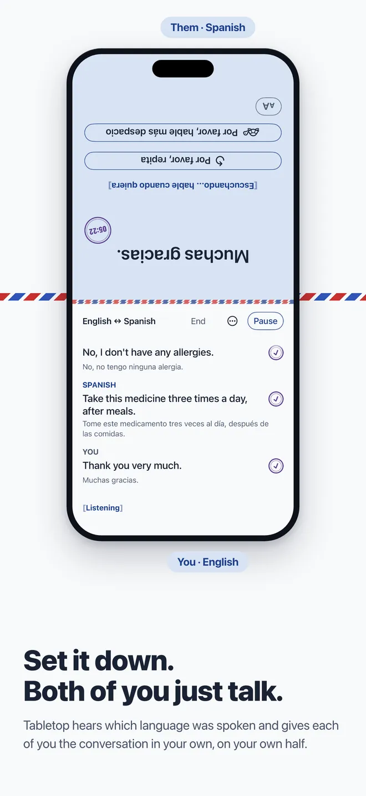
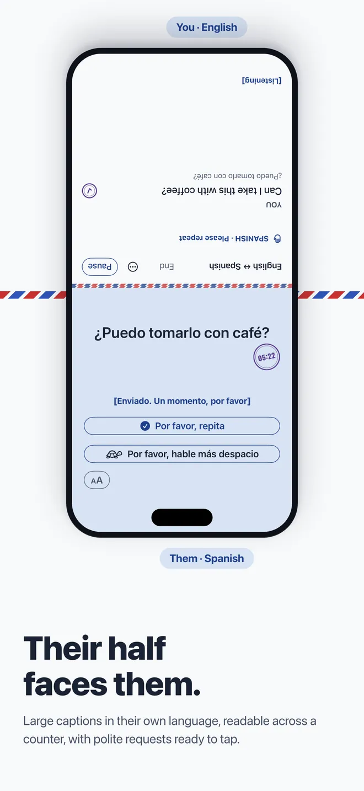
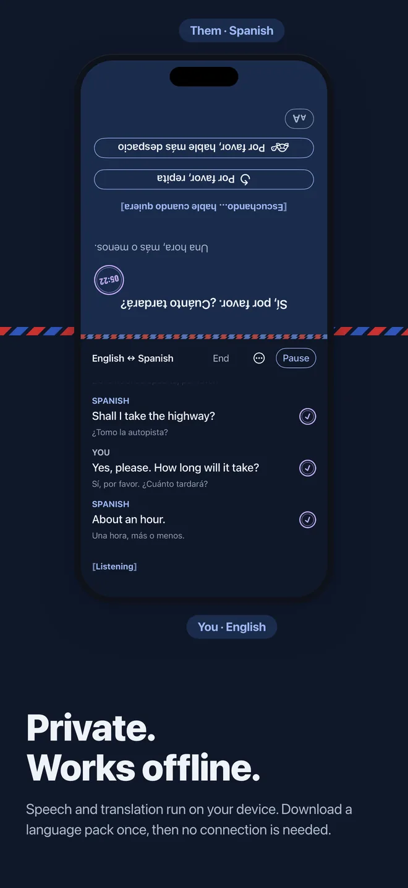
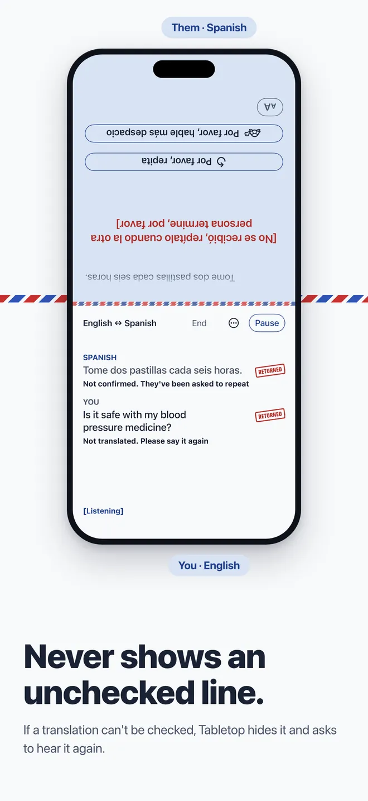
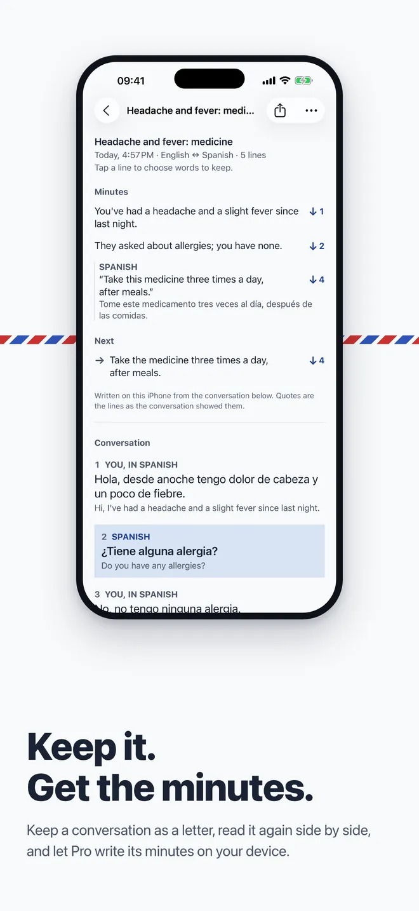
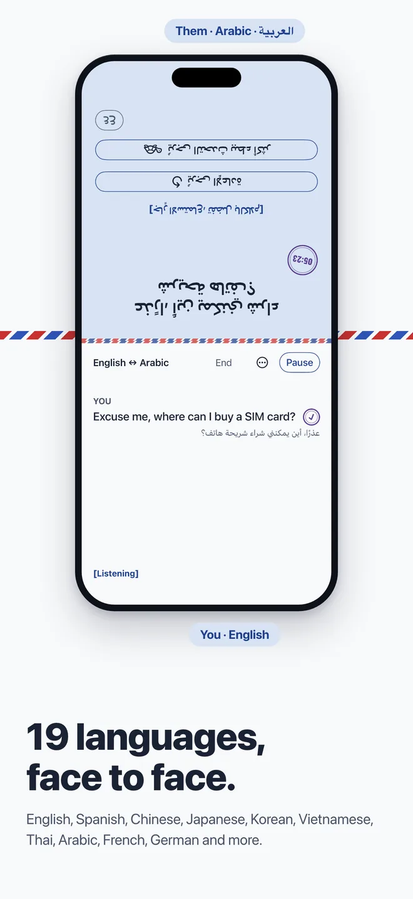

No turns
Two listeners run at once, one per language. Nobody taps to take a turn and nobody passes the phone around.
[Listening — speak any time]
Hold your iPhone up between you. Tabletop listens in both languages at once, works out which one was spoken, and shows each person the conversation on their own half of the screen: yours facing you, theirs turned to face them.
With most translator apps, two people take turns: tap, speak, turn the screen round, wait, turn it back. The conversation stops after every sentence and both people end up staring at a phone. Tabletop stays in your hand and keeps up with you, so you can keep looking at each other.
The one you speak and the one they speak. Download the language packs once, over Wi‑Fi.
Tilt the top of the phone toward them. Their half is turned to face them and greets them politely in their language.
Either of you can speak at any time. The language spoken decides whose side a line belongs to.
Two listeners run at once, one per language. Nobody taps to take a turn and nobody passes the phone around.
Large captions in their own language, readable at arm’s length, at a size they choose themselves. They can scroll back to re-read a price or a dose.
Ready-made requests such as “Please repeat” and “Please speak more slowly” are written by people, in a courteous register, in all 19 languages.
If a translation can't be confirmed, Tabletop hides it rather than risk a wrong number, and tells both of you who should say it again.
Speech recognition and translation run on your iPhone. After a one-time language pack download it works with no connection.
Add the names and terms that must never be translated, so “Mai” stays Mai and your company stays your company.
Write an address or a booking ahead of time and show it full screen, upright and as large as it fits. Or have a sentence translated on your iPhone and check what they will read.
One-way captions in your language for a guide, an announcement or someone explaining. Tap Talk Back when you want to answer.
Start from Control Center, the Lock Screen or the Action button. Tabletop keeps interpreting if you switch apps or lock the phone, with Pause and End on the Lock Screen.
App Store screenshots. The other person's half is upside down to you, so it reads the right way up for them.






Demonstrations, not customer stories.
JAPANESE一日三回、食後に飲んでください。
YOU READTake it three times a day, after meals.
VIETNAMESEĐến khách sạn khoảng hai mươi phút ạ.
YOU READIt's about twenty minutes to the hotel.
KOREAN체크아웃은 오전 11시입니다.
YOU READCheck-out is at 11 a.m.
CHINESE五百件的话，下周五可以交货。
YOU READFor five hundred pieces, we can deliver next Friday.
A stranger's words are not yours to send anywhere. Tabletop keeps them on the phone.
Pick any two. Availability depends on Apple's on-device language packs.
The app itself is in English, Tiếng Việt, 日本語, 한국어, 简体中文 and 繁體中文.
Open a Duo and the two halves sit naturally on either side of the fold. On any iPhone with iOS 26 or later, the screen splits the same way. Siri and Shortcuts can start and end a conversation; VoiceOver and Dynamic Type are supported on both halves.
Tabletop uses machine translation, so it can make mistakes. It hides any line it can't confirm and gives both people a polite way to ask for a repeat. For medical, legal or safety-critical conversations, please use a professional interpreter.
Yes, once you have downloaded the speech and translation packs for both languages. Download them over Wi‑Fi before you travel.
Any iPhone with iOS 26 or later. iPhone Duo is the device it was designed around.
Tabletop is free on the App Store. The other person will never meet a paywall.
No. Everything happens on your phone. Their half greets them in their language and tells them it is machine translation.
Yes. Once you start a conversation, Tabletop keeps listening and translating until you end it, so you can check a map or a calculator. A Live Activity shows that it is listening, with Pause and End.
Not by default. If you choose to keep conversations, they are saved on your device and in your own iCloud, and the other person sees that the conversation is being saved.
[Ready when you are]
Tabletop is free on the App Store. Take it into a real conversation, and tell us how it went.
Download on the App StoreMachine translation, not a certified interpreter.